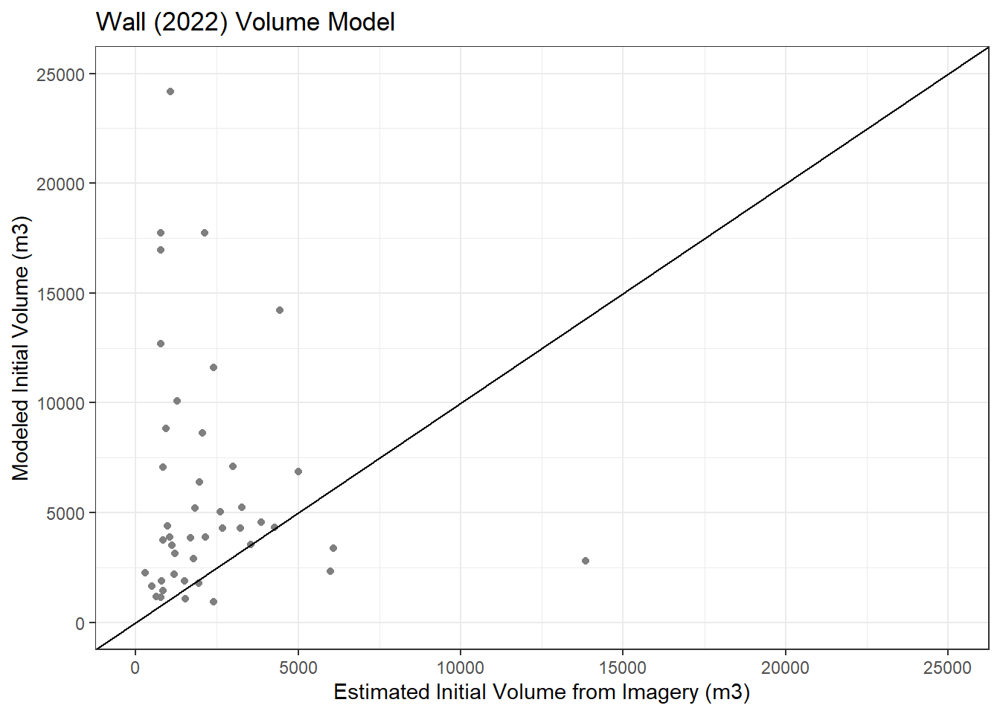

Chapter 4 Volume Compare Plots
## Site obs_vol initial_vol_est obs_vol_low obs_vol_high X2020_reg
## 1 Brianhead 1 65 97.5 73.125 131.625 114.4951
## 2 Brianhead 2 500 625.0 468.750 843.750 283.9000
## 3 Brianhead 3 1500 1800.0 1350.000 2430.000 1009.5000
## 4 Brianhead 4 380 532.0 399.000 718.200 411.4000
## 5 Clay Springs 1 1050 1522.5 1141.875 2055.375 1866.0480
## 6 Clay Springs 2 170 187.0 140.250 252.450 631.9028
## int_reg int_vol_Wall
## 1 NA NA
## 2 1837.290 2287.9
## 3 3267.823 1022.9
## 4 753.100 1112.7
## 5 NA NA
## 6 NA NAvol_reg_obs = vol_comp[,c(1:2,6)]vol_ratio = vol_reg_obs
vol_ratio$Ratio = NA
vol_ratio$Used = NAvol_ratio$Ratio = vol_ratio[,3]/vol_ratio[,2]vol_ratio[c(2,9,12,13,14,16,19,23), 5] = 'Used'
vol_ratio[c(1,3,4,5,6,7,8,10,11,15,17,18,20,21,22,24:29),5] = 'Not Used'
group = c('Y','N')vol_comp_plot = ggplot(data = vol_ratio, aes(obs_vol, X2020_reg, shape = Used)) + geom_point() + scale_color_manual(values = c('black','black')) + scale_shape_manual(values = c(1, 16)) + xlab('Observed Volume (m3)') + ylab('Modeled Volume (m3)') + theme_bw() + labs(shape ='Sites used in this study')+ expand_limits(x=0,y=0)+ theme(legend.position = 'right') + geom_abline(yintercept = 0, color = 'black')## Warning: Ignoring unknown parameters: yinterceptvol_comp_plot
ggsave('C:\\Users\\clang\\Documents\\USU\\DF_Areas\\debris_flow_stats\\data\\figures\\plots\\ObsMod2020.png', plot = vol_comp_plot, device = 'png')## Saving 7 x 5 in imagevol_ratio_plot = ggplot(data = vol_ratio, aes(obs_vol, Ratio, shape = Used)) + geom_point() + scale_color_manual(values = c('black','black')) + scale_shape_manual(values = c(1, 16)) + xlab('Observed Volume (m3)') + ylab('Modeled Volume:Observed Volume') + theme_bw() + labs(shape ='Sites used in this study')+ expand_limits(x=0,y=0)+ theme(legend.position = 'right') + geom_hline(yintercept = 1, color = 'black') + geom_hline(yintercept = 1.5, linetype = 'dashed', color = 'black') + geom_hline(yintercept = 0.5, linetype = 'dashed', color = 'black')
vol_ratio_plot
ggsave('C:\\Users\\clang\\Documents\\USU\\DF_Areas\\debris_flow_stats\\data\\figures\\plots\\ObsRatio2020.png', plot = vol_ratio_plot, device = 'png')## Saving 7 x 5 in imagewrite.csv(gross_sum_t_perc, file = 'C:\\Users\\clang\\Documents\\USU\\DF_Areas\\debris_flow_stats\\data\\data_sheets\\processed_summary_data\\R_outputs\\gross_sum_percent.csv', row.names = TRUE)
write.csv(perc_FC4_1, file = 'C:\\Users\\clang\\Documents\\USU\\DF_Areas\\debris_flow_stats\\data\\data_sheets\\raw_site_data\\Twitchell\\FC4_percent.csv', row.names = TRUE)
write.csv(perc_FC5_1, file = 'C:\\Users\\clang\\Documents\\USU\\DF_Areas\\debris_flow_stats\\data\\data_sheets\\raw_site_data\\Twitchell\\FC5_1_percent.csv', row.names = TRUE)
write.csv(perc_FC5_2, file = 'C:\\Users\\clang\\Documents\\USU\\DF_Areas\\debris_flow_stats\\data\\data_sheets\\raw_site_data\\Twitchell\\FC5_2_percent.csv', row.names = TRUE)
write.csv(perc_FC7_1, file = 'C:\\Users\\clang\\Documents\\USU\\DF_Areas\\debris_flow_stats\\data\\data_sheets\\raw_site_data\\Twitchell\\FC7_1_percent.csv')
write.csv(perc_FC7_2, file = 'C:\\Users\\clang\\Documents\\USU\\DF_Areas\\debris_flow_stats\\data\\data_sheets\\raw_site_data\\Twitchell\\FC7_2_percent.csv')
write.csv(perc_SC2, file = 'C:\\Users\\clang\\Documents\\USU\\DF_Areas\\debris_flow_stats\\data\\data_sheets\\raw_site_data\\Twitchell\\SC2_percent.csv')